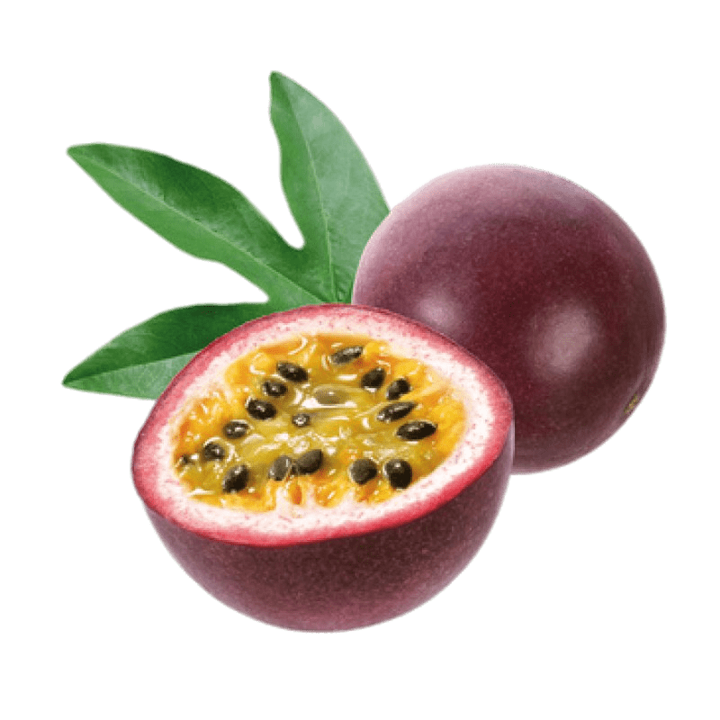

⬅ Back
Passion Fruit Yogurt Parfait

Need something with sweet and tangy flavour? Something refreshing and filling? Well this is it!
Ingredients
- 1/3-1/2 cup of Greek Yogurt
- Passion Fruit or Passion Fruit Jam
- Sugar or Honey, if you're using real passion fruit
- Granola and oats or FiberOne cereal
Instructions
- In a bowl add your yogurt and passion fruit yoke (or jam) and mix
- Sugar, if you've used real fruit
- Add granola and oats (fiber cereal) to your respected amount
- Mix and eat!
⬅ Back